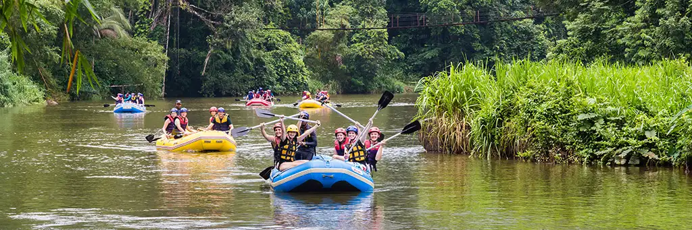
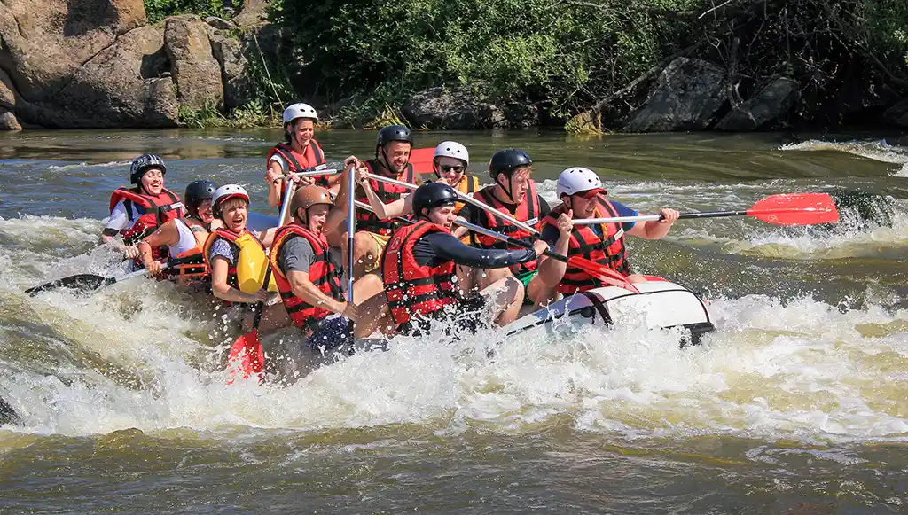
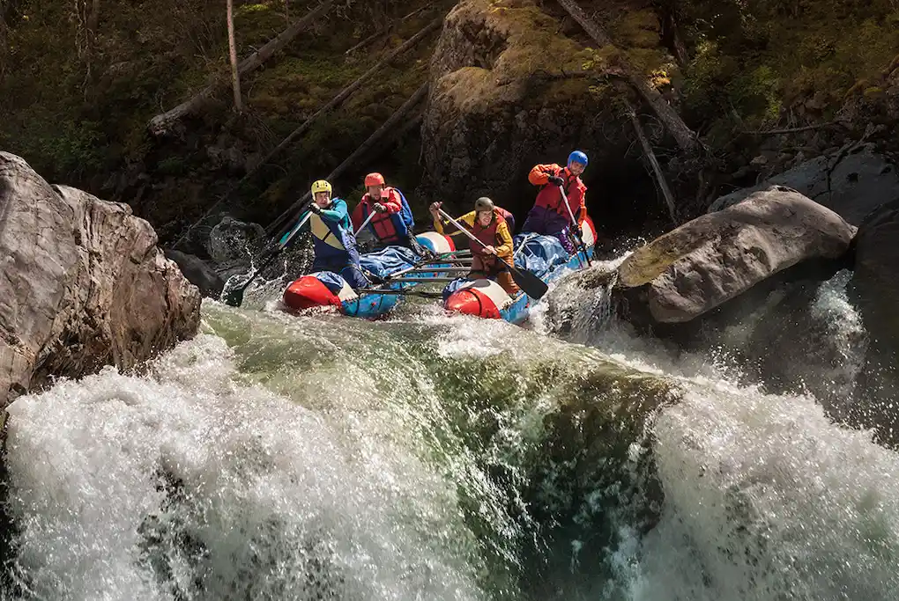
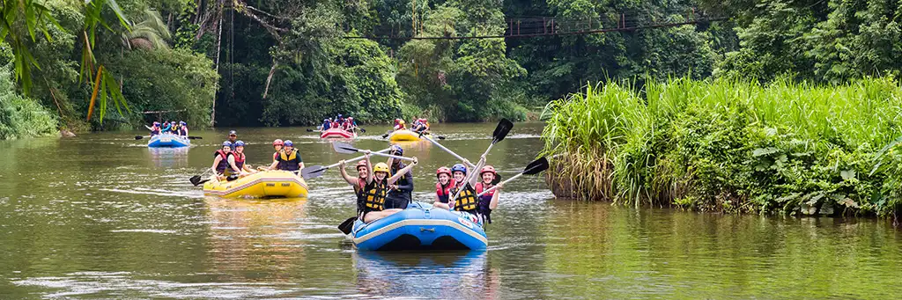
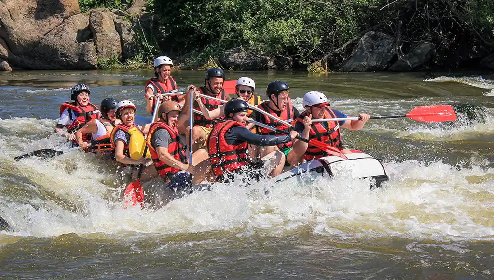
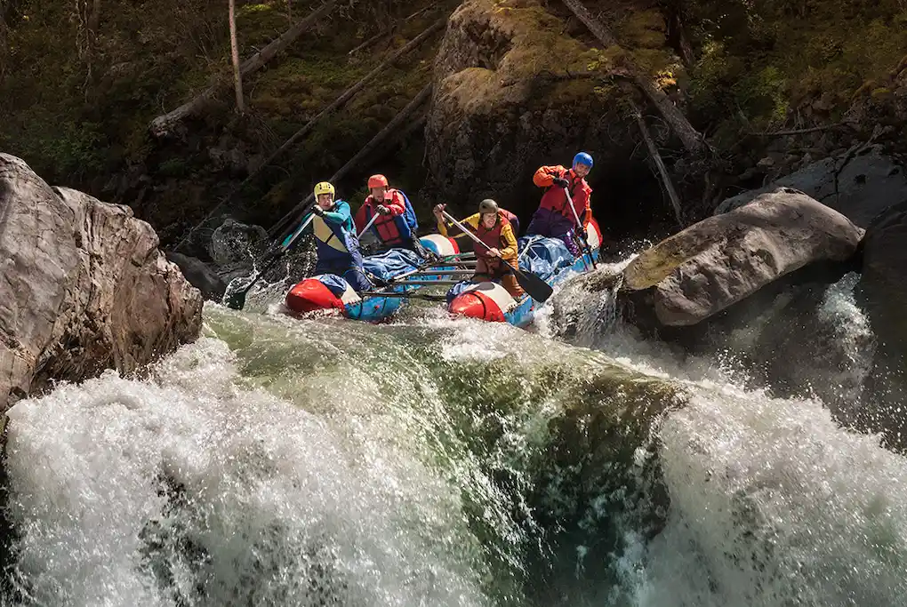

At White Water Rafting Co., our mission is to deliver thrilling outdoor adventures and lasting memories for every client. Whether you're a first-time paddler or a seasoned explorer, we strive to make every moment safe, exciting, and unforgettable. Our guides are trained professionals who love what they do, and it shows in every smile, laugh, and high-five. Join us for the adventure of a lifetime — where the river meets fun and friendship flows freely!
 




